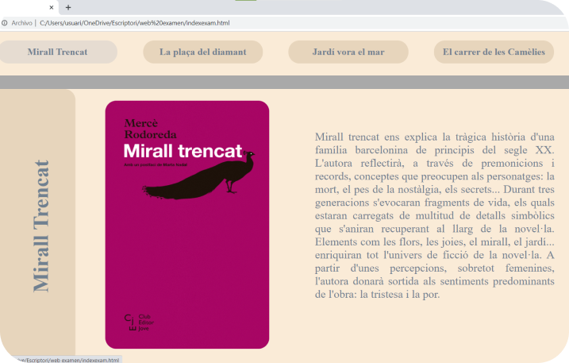

Aquesta va ser la primera pràctica d’examen d’aquesta assignatura. Consistia a realitzar una pàgina web a partir d’un estil mostrat i en el que com a condició també hi havia que havia de canviar el contingut de la pàgina en clicar a cada un dels botons del menú superior. La temàtica de la pràctica era lliure. Per fer-la vaig decidir triar com a tema novel·les de la Mercè Rodoreda, ja que és una escriptora que m’agrada molt. El resultat va ser aquest:
